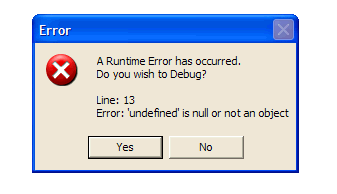
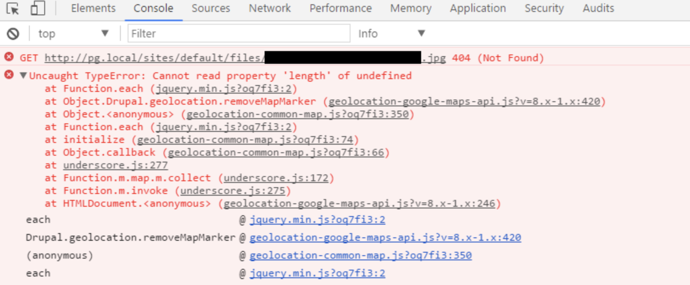

Edgar Marukyan
FLOW IS A STATIC TYPE CHECKER FOR JAVASCRIPT.
Runtime Erros Look like...


Static Type Checking Looks like...
/* @flow */
const x = 'a text'
const getLength = (t: string) => t.length
// Error [flow] number (This type is incompatible with
// the expected param type of string)
getLength(145)
We have got a huge ReactJs/Redux app
-can be extended, supported and maintained easily.
-which has the fastest deplyment cycle in our company.
function foo(num: number) {
if (num > 10) {
return 'cool';
}
}
// cool
const result: string = foo(100);
console.log(result.toString());
// still cool?
console.log(foo(1).toString());
// error at runtime
"Cannot read property 'toString' of undefined"
TypeScript does not catch this
function foo(num: number) {
if (num > 10) {
return 'cool';
}
}
// error: call of method `toString`.
// Method cannot be called on possibly null value
console.log(foo(100).toString());
Flow does catch this
But why?
// error: return undefined.
// This type is incompatible with string
function foo(num: number): string {
if (num > 10) {
return 'cool';
}
}
// nullable type: the one inferred
function foo(num: number): ?string {
if (num > 10) {
return 'cool';
}
}
// to fix this, we need to check the result
const fooed: ?string = foo(100);
if (fooed) {
fooed.toString();
}
Basic Types in Flow
Simple Type Checking.
// @flow
function square(n: number): number {
return n * n;
}
square("2"); // Error
// @flow
function square(n) {
return n * n; // Error
}
square("2");
// @flow
function acceptsBoolean(value: boolean) {
// ...
}
acceptsBoolean(true); // Works!
acceptsBoolean(false); // Works!
acceptsBoolean("foo"); // Error!
if (42) {} // 42 => true
if ("") {} // "" => false
// @flow
function acceptsBoolean(value: boolean) {
// ...
}
acceptsBoolean(0); // Error!
acceptsBoolean(Boolean(0)); // Works!
acceptsBoolean(!!0); // Works!
// @flow
function acceptsNumber(value: number) {
// ...
}
acceptsNumber(42); // Works!
acceptsNumber(3.14); // Works!
acceptsNumber(NaN); // Works!
acceptsNumber(Infinity); // Works!
acceptsNumber("foo"); // Error!
// @flow
function acceptsString(value: string) {
// ...
}
acceptsString("foo"); // Works!
// @flow
function acceptsNull(value: null) {
/* ... */
}
function acceptsUndefined(value: void) {
/* ... */
}
acceptsNull(null); // Works!
acceptsNull(undefined); // Error!
acceptsUndefined(null); // Error!
acceptsUndefined(undefined); // Works!
Maybe Types ?
// @flow
function acceptsMaybeString(value: ?string) {
// ...
}
acceptsMaybeString("bar"); // Works!
acceptsMaybeString(undefined); // Works!
acceptsMaybeString(null); // Works!
acceptsMaybeString(); // Works!
Optional object properties
{ propertyName?: string }
// @flow
function acceptsObject(value: { foo?: string }) {
// ...
}
acceptsObject({ foo: "bar" }); // Works!
acceptsObject({ foo: undefined }); // Works!
acceptsObject({ foo: null }); // Error!
acceptsObject({}); // Works!
Optional function parameters
function method(param?: string) { /* ... */ }
// @flow
function acceptsOptionalString(value?: string) {
// ...
}
acceptsOptionalString("bar"); // Works!
acceptsOptionalString(undefined); // Works!
acceptsOptionalString(null); // Error!
acceptsOptionalString(); // Works!
// @flow
function acceptsTwo(value: 2) {
// ...
}
acceptsTwo(2); // Works!
// $ExpectError
acceptsTwo(3); // Error!
// $ExpectError
acceptsTwo("2"); // Error!
// @flow
function getColor(name: "success" | "warning" | "danger") {
switch (name) {
case "success" : return "green";
case "warning" : return "yellow";
case "danger" : return "red";
}
}
getColor("success"); // Works!
getColor("danger"); // Works!
// $ExpectError
getColor("error"); // Error!
type TSimpleObject = {
id: number,
value: string
}
const f = (obj: TSimpleObject) => {
return obj.value * 100
}
string (The operand of an arithmetic operation must be a number.)
(property) value: string
Edgar Marukyan. CTO at
RenderForest
Thanks to:
Oliver Zeigermann